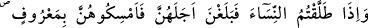
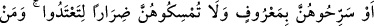

böylece fesh olur.
Rasûlullah (s.a.) buyurmuştur ki: “Hulle yapana da yaptırana da Allah lânet
etsin”[176] Hulle yapan; ikinci koca, yaptıran ise birinci kocadır. Hadis-i şerifte
zikredilen “lânet”in mânâsını şöyle anlamak gerekir: Hulle yapan lânete uğramıştır.
Çünkü devamlılığı için meşrû kılınan nikâh akdini, belli bir süre sonra ayrılmak
maksadıyla gerçekleştirmiş, dolayısıyla insanların davarlarını çiftleştirmek için belli
bir müddet dahilinde emâneten aldıkları “teke” konumuna düşmüştür. Hulle yaptıran da
lânete uğramıştır; zira böyle bir nikâhın yapılmasına sebeb olmuştur. Sebeb olan da,
yapan kadar günaha ortaktır.
Buradaki lânetin bir başka anlamı: Bu iki kimsenin rezilliğidir. Hulle yapanın
rezilliği, bu tür bir nikâha teşebbüs etmesi sebebiyledir. Rasûlullah (s.a.)’in, hulle
yapan kişiyi kasdederek: “Dikkat ediniz! Size ödünç alınan tekeden haber vereyim
mi?”[177] buyurması bu alçaklığa delîldir. Hulle yaptıranın rezilliği ise, ikinci bir
kocanın yatağına aldığı ve istimtâ ettiği bir kadına tekrar dönerek, selîm bir tabîatın hoş
karşılayamayacağı bir işi yapması bakımındandır. Yoksa burada, hakîkî mânâda bir
lânet kasdedilmiş değildir. Çünkü ümmeti hakkında hakîkî anlamda lânet, risâlet
mansıbının sâhibi Hz. Muhammed (a.s.)’a lâyık değildir. Zira O (s.a.), lânet edici olarak
gönderilmemiştir.
Âyet-i celîlede şu işâret vardır: Sohbet ehli kimseler, ihvânlarının bir veya iki kez
vuku bulan hatâlarını affederler. Üçüncüsünde yine, ihvânla sohbetten uzaklaşırsa,
kendisi gibi yoldan uzaklaşmış kimselerle arkadaşlık etmedikçe onunla ilişki içinde
olmak câiz değildir. Fakat, bundan sonra, yaptıklarına pişman olup, o tür
arkadaşlarından usanarak tekrar eski ihvânına dönerse, Allah için sohbet ve ubûdiyet
şartlarını yerine getirebileceklerine inandıkları takdirde, böyle bir dönüş ve kabûl ediş
sebebiyle, onlara bir günah yoktur. İşte bunlar Allah’a yakın olanların ve O’na doğru
yürüyenlerin yoludur ki, Allah Teâlâ bunu tasrîh (açıkça ifade etmek), ta’rîz (üstü kapalı
sözle anlatmak), îmâ, ibâre ve işâretlerle, kapalı nükteleri çözen ve işâretlerden anlayan
kimselere böylece açıklamaktadır. Bu açıklama et-Te’vîlâtü’n-Necmiyye isimli eserden
alınmıştır.
Ahmed b. Hadraveyh der ki: Yol açıktır, delîl meydandadır. Dâvetçinin de ne dediği
gayet nettir. O dâvetini duyurmuştur. O halde şaşkınlığın mânâsı nedir? Bundan sonra
şaşkınlık ancak körden beklenebilir. Hâfız der ki:
Güneşin yüzünün özelliklerini yarasalardan sorma!
Kemâl ehli nazar sâhibleri O’nun cemâliyle hayran ve sekrandır.